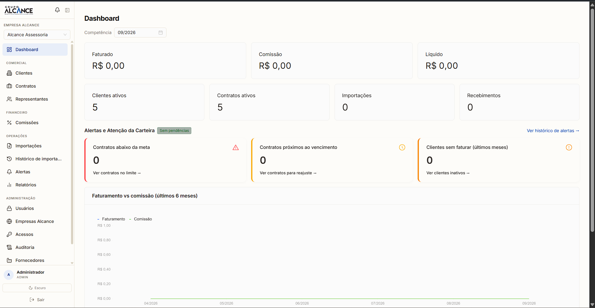
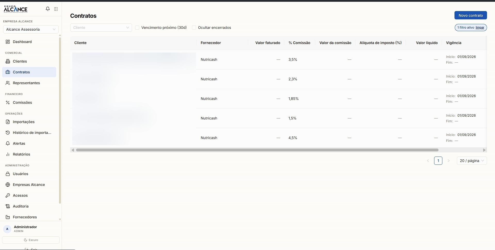
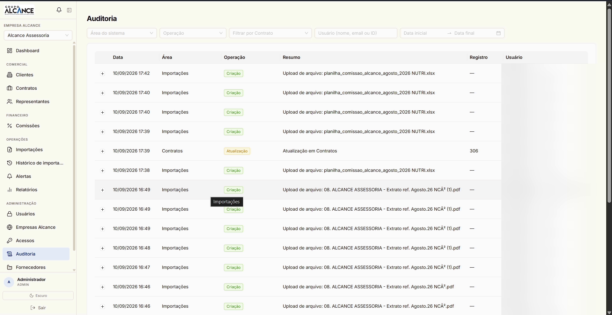

The problem
Contracts and commissions ran on spreadsheets. Every supplier sends billing in a different layout — Excel, CSV, PDF, sometimes a photo of a screen — and someone retypes all of it by hand. Nobody knows who changed what, and splitting between reps depends on manual arithmetic, with decimal places the spreadsheet rounds and money does not.
What was built
- Import with automatic reading of Excel, CSV, PDF and images, with OCR and per-supplier layout recognition
- Automatic matching of each row to client and contract, by company id with a name fallback, separating whatever needs human review
- Commission split across several sales reps per contract, with cents that add up
- Portfolio monitoring: automatic email when a client stops billing, a contract approaches expiry or a tax rate is missing
- Reports and statements in PDF and Excel, including ABC analysis of client concentration
- Multi-tenant: several group companies isolated from each other, with workspace switching and three access roles
Modules
Fifteen modules, from commercial records to the statement sent by email.
Commercial
- Clients, with bulk import
- Client transfer between companies
- Suppliers and subgroups
- Sales representatives
- Contracts with term and rate
- Rate renegotiation history
Finance
- Billing import
- Import exceptions
- Receipts and tax rates
- Commission per representative
- Reprocessing by period
Intelligence
- Dashboard and time series
- Representative ranking
- ABC client analysis
- Reports with export
- Automatic portfolio alerts
Administration
- Group companies (workspaces)
- Users and password reset
- User-to-company access matrix
- Change audit trail
Architecture
- Monorepo with separately versioned API and web, mirrored feature-based organisation on both ends
- End-to-end typed API contract: the OpenAPI spec is generated from Zod and becomes TypeScript types on the frontend via openapi-typescript
- Multi-tenant scoping in middleware — the server never accepts a company id coming from the client, it always resolves it from the authenticated user
- Reusable RBAC applied route by route, with three real roles
- Financial calculation isolated in pure functions, reused by import, receipts and reports
- Import confirmation in a single transaction, recomputing the values on the server instead of trusting the file's totals
- Uploads verified by the real file's magic bytes, not the declared mime type, with a SHA-256 hash on the audit trail
- In-process daily cron for alerts and retrying failed emails
Integrations
External systems the product talks to.
- Brevo (e-mail)
- Better Auth
- Tesseract OCR
- pdf.js
- GHCR
- Docker
- GitHub Actions
- Snyk
Technical challenges
Every supplier sends the file its own way
The same data arrives with different column names, order and format — sometimes just a photo of a screen. Reading combines three layers: a dictionary of column aliases tolerant to typos and OCR errors; a per-supplier template that memorises the right mapping once it is done a single time, so the next import comes in already recognised; and positional table reconstruction from OCR, including removal of the grid lines that interfere with text recognition.
Never trust the number that came in the file
Each row is matched to client and contract by company id, falling back to name when OCR misreads a digit, and validated against the contract's term for that period. The critical part is the close: financial values are recomputed on the server at confirmation time rather than accepting the totals from the file or the approved preview — a tampered or stale preview never becomes posted money.
Cents that have to add up
When a contract has several representatives on different percentages, rounding before splitting makes the parts stop matching the total — the classic financial-system bug. The split starts from the unrounded value and only rounds at the end, per representative.
Raising the alarm without crying wolf
Billing-drop detection runs daily and has to tell missing data apart from legitimate configuration — a 0% rate is a cashback client, not a blank field. Alerts are deduplicated by their own client-and-month key, and emails that fail are reprocessed quietly instead of being lost.
Screens
Screenshots of the system in use.


